Authors: Cristina Bena, Marion Cranney, Poonam Kumari, Alberto Zobelli, Laurent Simon
Type: both · Category: other · PDF: https://arxiv.org/pdf/2607.28297v1
Analysis basis: full PDF text, analyzed in chunks
Topic relevance: Kondo & dissipative impurity 3/5 · Keldysh / 2PI / non-Gaussian methods 1/5 · methods for driven-dissipative 1/5
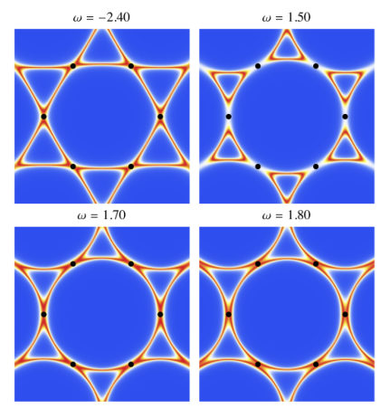
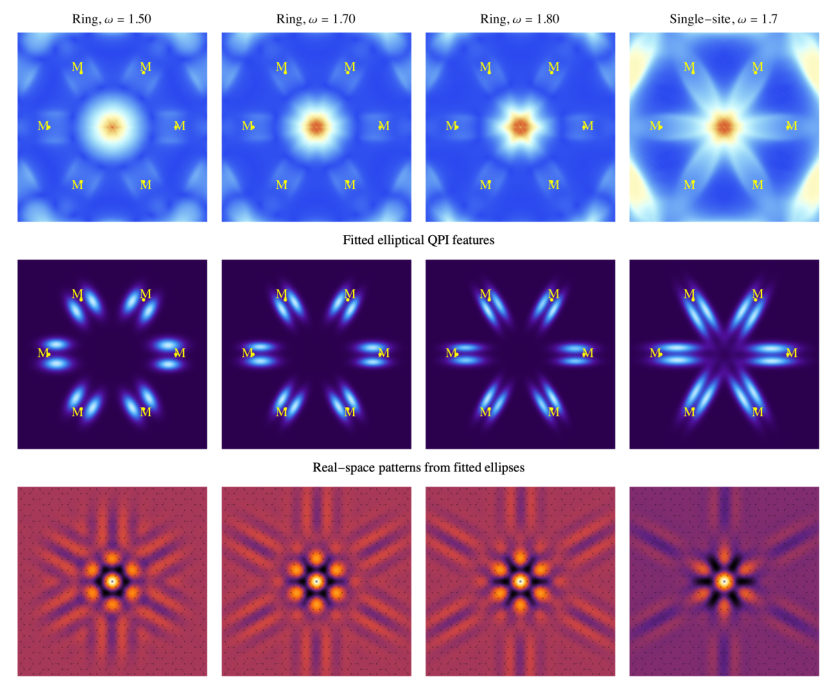
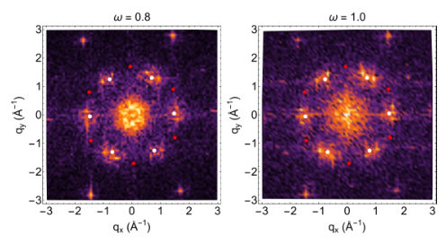
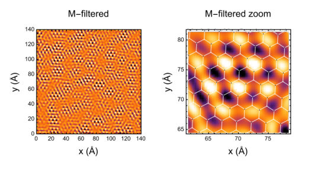
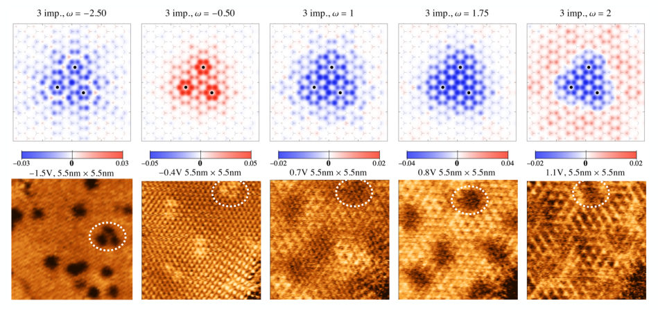
Summary. This paper theoretically investigates the effect of gold cluster intercalation on graphene's electronic properties by modeling the Au cluster as a local ring-shaped scatterer. Using T-matrix calculations, the authors successfully reproduce the characteristic elliptic QPI patterns observed experimentally near the M points. The findings confirm that the scattering mechanism dictates both the momentum-space signatures and the resulting energy-dependent standing wave patterns in real space.
Why it may be interesting. The work provides a detailed quantum mechanical description of how localized impurities modify electronic band structure features (QPI/standing waves) in 2D materials, which is relevant for understanding nanoscale device physics and scattering mechanisms beyond simple continuum models.
Main problem. The study investigates the electronic consequences, specifically stationary waves and modified Quasiparticle Interference (QPI) features, resulting from gold cluster intercalation beneath epitaxial graphene.
Main result. The Au intercalation acts as a ring-like scatterer, which theoretically reproduces the observed elliptic M-centered QPI structures seen in experimental FT-STS measurements. Furthermore, these QPI features naturally generate the nearly stationary standing-wave patterns observed in real space.
Method. The analysis employs the T-matrix formalism to calculate scattering amplitudes and local density of states corrections ($\delta ho$) in both momentum (QPI) and real space.
Model / system. The system is epitaxial graphene on SiC, modified by Au clusters intercalated beneath hollow sites. The electronic structure is modeled using a $p_z$ Hamiltonian for pristine graphene, coupled to an impurity Hamiltonian describing the local scattering potential from the Au cluster.
Key observables. QPI maps (momentum space), real-space standing wave patterns ($\delta ho(\mathbf{r}, \omega)$), and energy-dependent LDOS contrast sign changes.
Important parameters / regimes. The analysis is sensitive to energy ($\omega$), particularly near the upper Van Hove Singularity (VHS) region, and depends on the geometry of the scatterer (ring/hollow site).
Assumptions / limitations. Key approximations include using a minimal T-matrix approximation ($V_{ ext{eff}}(\omega) \simeq U\mathbb{I}_6$) because QPI features are far from Au hybridization levels. A limitation noted is that small-$q$ scattering can mask the M-point contributions in real-space calculations.
Figures summary. Figures illustrate pristine graphene spectral functions, calculated QPI maps showing double-lobe elliptical structures near M points, and corresponding real-space standing wave patterns, alongside energy dependence of the LDOS contrast.
Paper structure. The paper establishes the physical system (Au intercalation in graphene), develops a theoretical framework using the T-matrix formalism for scattering analysis, calculates key observables like QPI and real-space LDOS corrections, and finally compares these results against experimental FT-STS measurements to confirm the model's validity.
Gold intercalation beneath epitaxial graphene on SiC produces a cluster phase with unusual standing waves and quasiparticle-interference (QPI) features concentrated near the graphene M points. We show that this can be explained by Au intercalation below graphene hollow sites, which induces a local scattering potential on the six surrounding carbon atoms. Within a T-matrix treatment, this ring-like scatterer produces elliptical QPI structures centered near M, in agreement with the experimental FT-STS measurements. We further show that these QPI features naturally generate the nearly stationary standing-wave patterns observed in real space. Finally, we compute the local-density-of-states contrast on and off a small cluster and show that its sign and magnitude are strongly energy dependent, consistent with the experimental observations.
Authors: Dmitry Zverevich, Alberto F. Morpurgo, Alex Levchenko
Type: theory · Category: strongly correlated electrons · PDF: https://arxiv.org/pdf/2607.27406v1
Analysis basis: full PDF text, analyzed in chunks
Topic relevance: Keldysh / 2PI / non-Gaussian methods 3/5 · correlated cavity matter 1/5 · methods for driven-dissipative 1/5
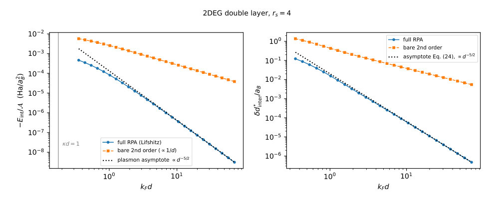
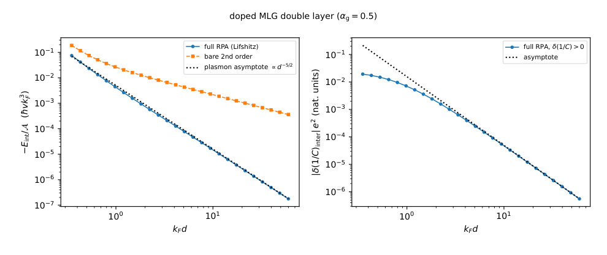
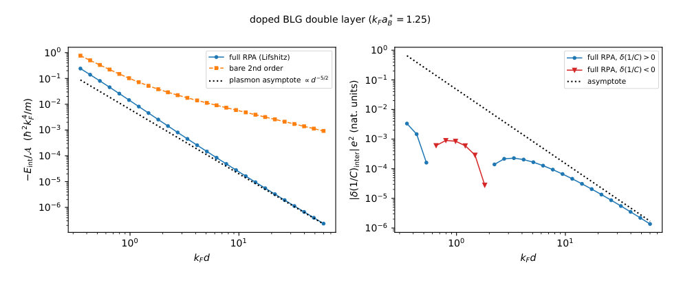
Summary. This paper develops a comprehensive theory for the quantum capacitance in electron bilayers by treating interlayer Coulomb correlations. It shows that these correlations manifest as a Casimir compressibility derived from coupled plasmon zero-point fluctuations. The work provides specific, material-dependent predictions, notably demonstrating anomalous screening effects in bilayer graphene.
Why it may be interesting. It provides a rigorous quantum electrodynamic description of correlation effects in low-dimensional conductors, linking macroscopic transport properties (capacitance) directly to fundamental vacuum fluctuation forces (Casimir effect).
Main problem. To develop a systematic theory for the quantum capacitance of electron double layers, specifically isolating and characterizing the contribution arising from interlayer Coulomb correlations.
Main result. The interlayer correlation to the inverse capacitance is shown to be equivalent to a Casimir compressibility derived from coupled plasmon zero-point fluctuations. For bilayer graphene, this correction is anomalous, exhibiting suppression and sign reversal in the experimentally relevant separation range.
Method. The theory employs functional-integral formulations and ring diagram expansions (RPA generalization) to calculate the ground-state energy corrections due to interlayer interactions.
Model / system. The primary model is two parallel 2D electron sheets (electron bilayers), applied to systems like doped monolayer and bilayer graphene. Interactions are mediated by the Coulomb potential, leading to coupled plasmon excitations.
Key observables. Quantum capacitance ($C$), inverse quantum capacitance ($\delta C^{-1}_{ ext{inter}}$), interlayer correlation energy, and Casimir compressibility.
Important parameters / regimes. Interlayer separation distance ($d$), electron density ($n$), and the ratio $k_F d$ (Fermi wavevector times separation).
Assumptions / limitations. The calculation often assumes the nonretarded limit of the Lifshitz theory and neglects higher-order vertex corrections, though limits are defined for Wigner crystal or exciton condensation regimes.
Figures summary. Not specified in the notes; the focus is on deriving closed functional forms and asymptotic behaviors for the capacitance correction.
Paper structure. The paper systematically develops the theory by first establishing the connection between interlayer energy and van der Waals/Casimir physics. It then applies this framework to specific materials (2DEG, graphene) to derive quantitative results, concluding with a discussion of theoretical limits and regimes where pairing effects dominate.
Capacitance is a thermodynamic probe of interacting electrons: it measures the energy cost of moving charge between conductors, and in low-dimensional systems this cost is shaped by exchange and correlation as much as by electrostatics. We develop a theory of the quantum capacitance of electron double layers, semiconductor quantum wells as well as monolayer and bilayer graphene devices, focusing on the contribution generated by interlayer correlations. Within a functional-integral formulation we show that the separation-dependent part of the ground-state energy is, at the level of ring diagrams, exactly the nonretarded Lifshitz expression for the van der Waals energy of two conducting sheets, with reflection amplitudes built from the layer polarizabilities. The interlayer correction to the inverse capacitance is the second density derivative of this energy: a Casimir compressibility. The zero-point fluctuations that generate Casimir forces between mirrors are here the coupled plasmons of the bilayer, and their contribution to the capacitance is obtained in closed form, with a universal coefficient; its sign shows that interlayer correlations oppose charging at high density. A Gell-Mann-Brueckner analysis gives the exact high-density limit in terms of universal functions. For graphene we find that monolayers follow the electron-gas template, while bilayer graphene is anomalous: interband screening suppresses the correction by orders of magnitude and reverses its sign in the experimentally relevant range of separations. We delineate the limits of the theory, identifying the dilute Wigner-crystal regime and electron-hole double layers near exciton condensation as regimes where the capacitance becomes a probe of interlayer pairing.
Authors: Zhihao Zhang, Yankai Huang, Tiantian Li, Denglong Wang, Jie Peng
Type: theory · Category: quantum gases · PDF: https://arxiv.org/pdf/2607.27734v1
Analysis basis: full PDF text, analyzed in chunks
Topic relevance: analog quantum simulation 2/5 · non-equilibrium dynamics 2/5 · driven-dissipative phase transition 1/5 · interference shaping light 1/5 · non-equilibrium universality 1/5
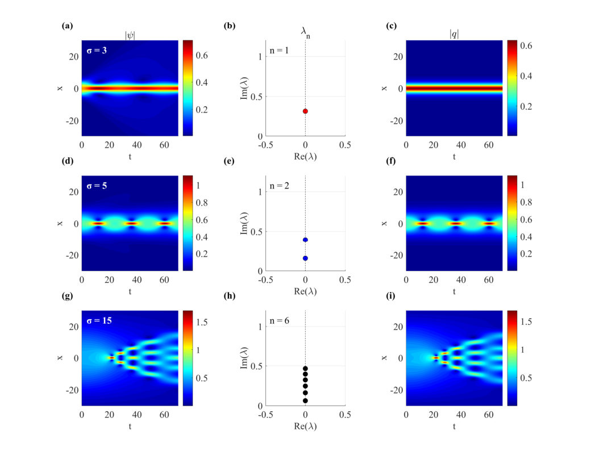
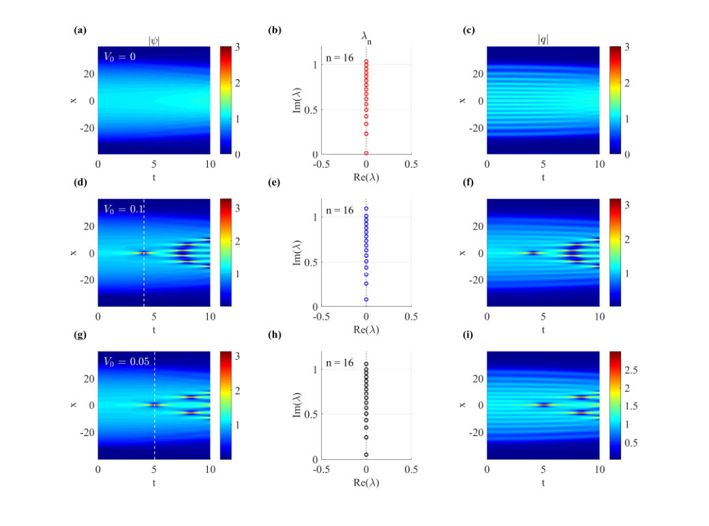
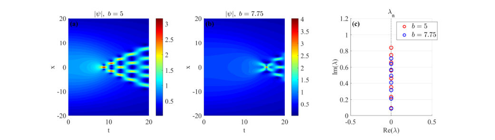
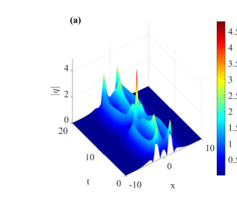
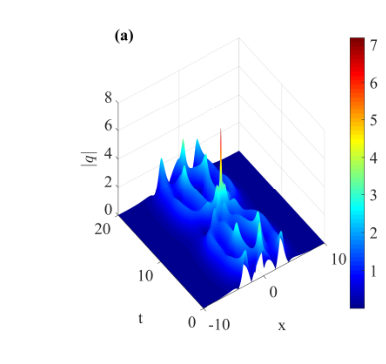
Summary. The paper analyzes rogue wave formation in Bose-Einstein condensates using nonlinear spectral analysis. It demonstrates that these extreme localized events arise not from new physics, but from the coherent phase synchronization and constructive interference of pre-existing bound soliton modes within the system's spectrum. The methodology provides a powerful, constructive tool for designing and understanding higher-order RW structures.
Why it may be interesting. This work provides a deep mathematical link between nonlinear wave phenomena (RWs) and integrable systems theory (soliton dynamics). For AMO physicists studying BECs, it offers a powerful spectral diagnostic tool to predict extreme events based on internal conserved modes rather than just external driving forces.
Main problem. The study investigates the formation mechanism and nonlinear spectral structures of rogue waves (RWs) in Bose-Einstein condensate (BEC) matter-wave systems with vanishing boundary conditions.
Main result. RW formation is shown to be governed by the coherent, phase-synchronized dynamics of discrete soliton modes encoded within the system's nonlinear spectrum. This provides a spectral engineering approach to understand and control these extreme localized events.
Method. The authors employ Nonlinear Fourier Transform (NFT) analysis based on the integrable focusing nonlinear Schrödinger equation and utilize Darboux reconstruction techniques derived from the Zakharov-Shabat scattering problem.
Model / system. The physical system is a quasi-one-dimensional Bose-Einstein condensate (BEC), modeled by the dimensionless focusing nonlinear Schrödinger equation. The analysis specifically addresses the case of vanishing boundary conditions, which distinguishes it from standard continuous-wave background analyses.
Key observables. Nonlinear spectrum (discrete eigenvalues $\lambda_n$ corresponding to bound solitons and continuous spectrum $Q_c(\lambda)$), peak amplitude $| ext{q}|_{ ext{max}}$, and the evolution of norming constants $c_n(t)$.
Important parameters / regimes. Initial wave packet width ($\sigma$), number of constituent soliton modes (e.g., three or four for higher-order RWs), and the synchronization time $T_0$.
Assumptions / limitations. The analysis assumes vanishing boundary conditions at infinity, allowing the use of spectral methods based on discrete eigenvalues; it also relies on mapping complex dynamics to linear phase shifts via NFT.
Figures summary. Figures compare spatiotemporal evolutions for Gaussian wave packets and show reconstructions using Darboux transformations (DT) for both three and four synchronized soliton modes, demonstrating coherent focusing peaks.
Paper structure. The paper builds from establishing the physical problem in BECs to applying advanced spectral techniques (NFT/ZS scattering). It analyzes two classes of RWs (Gaussian-induced and Peregrine solitons), develops a constructive 'spectral engineering' method based on phase matching, and concludes by unifying the mechanism under coherent soliton mode interaction.
Modulation instability provides an important framework for understanding rogue wave (RW) formation on continuous backgrounds. However, the formation mechanism and nonlinear spectral structures of RWs in Bose-Einstein condensate (BEC) matter-wave systems with vanishing boundary conditions remain largely unexplored. Here, we employ the nonlinear Fourier transform (NFT), based on the integrable structure of the focusing nonlinear Schrödinger equation and the Zakharov-Shabat scattering problem, to investigate two representative classes of first-order RWs in BEC systems. Through nonlinear spectral analysis and Darboux reconstruction, we demonstrate that both Gaussian-wave-packet-induced extreme localization events and experimentally observed Peregrine solitons are governed by the coherent dynamics of discrete soliton modes encoded in the nonlinear spectrum. For Gaussian initial states, increasing the initial width leads to an increasing number of discrete eigenvalues, resulting in a transition from fundamental solitons and bound states to Christmas-tree-like RW structures. For experimentally observed Peregrine solitons, localized perturbations reshape the discrete spectral configuration and phase evolution, enabling coherent focusing of multiple bound soliton modes. Furthermore, we reveal the spectral mechanism of higher-order RWs and propose an inverse spectral-engineering approach based on discrete-spectrum phase matching. Our results provide a nonlinear spectral perspective for understanding and controlling RW formation in matter-wave systems with vanishing boundary conditions.
Authors: Younes Ghorbani, Nayana Devaraj, Joshua Maile, Samuel Poage, Qihua Zhang, Maria Hilse, Stephanie Law, Salva Salmani-Rezaie, Awadhesh Narayan, Kaveh Ahadi
Type: both · Category: other · PDF: https://arxiv.org/pdf/2607.28441v1
Analysis basis: full PDF text, analyzed in chunks
Topic relevance: spintronics-quantum-optics interface 2/5 · Kondo & dissipative impurity 1/5 · analog quantum simulation 1/5 · exotic spin models in light-matter 1/5 · non-equilibrium dynamics 1/5
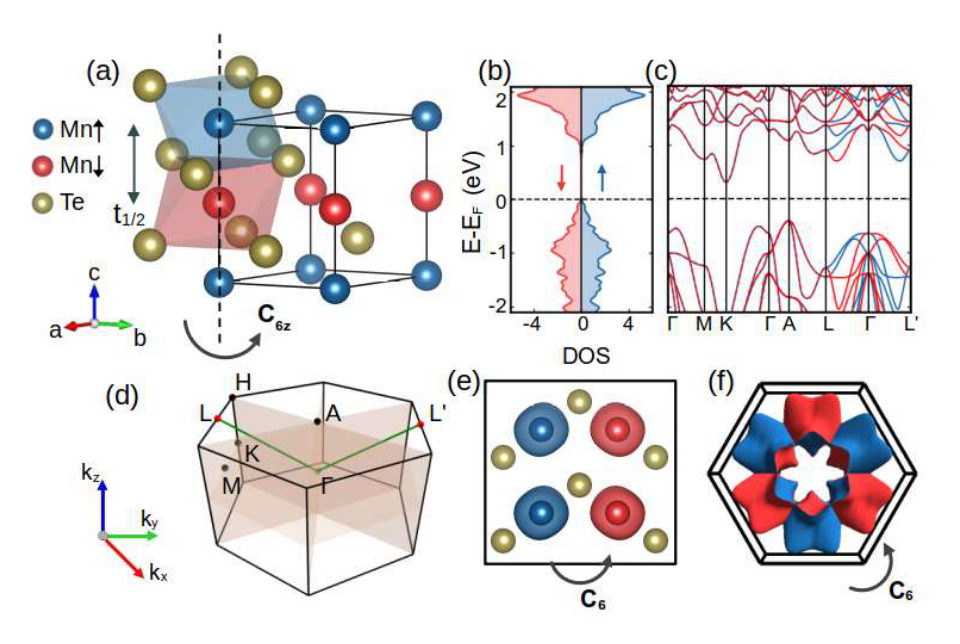
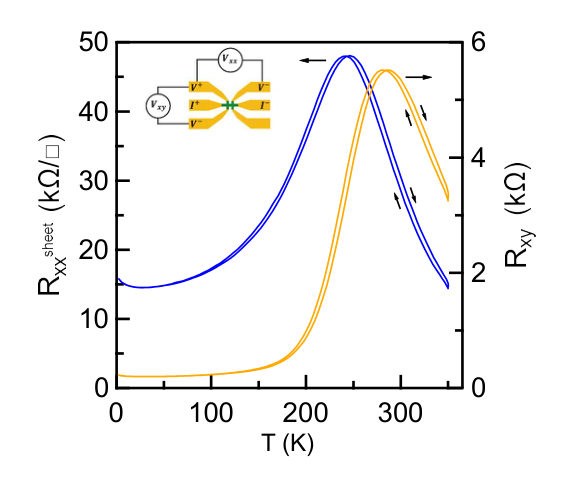
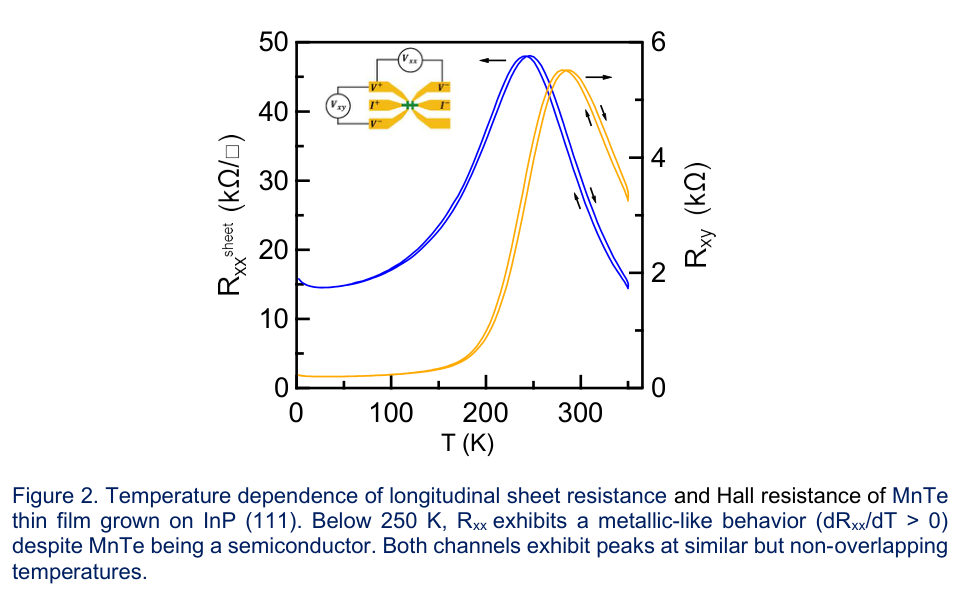
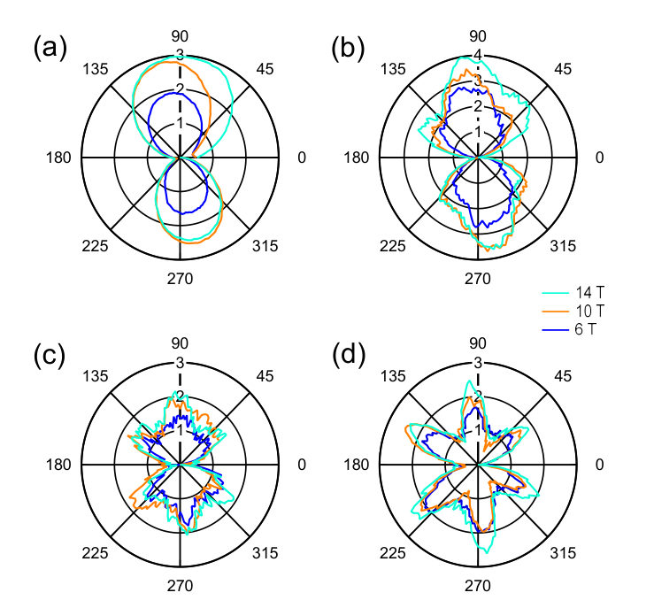
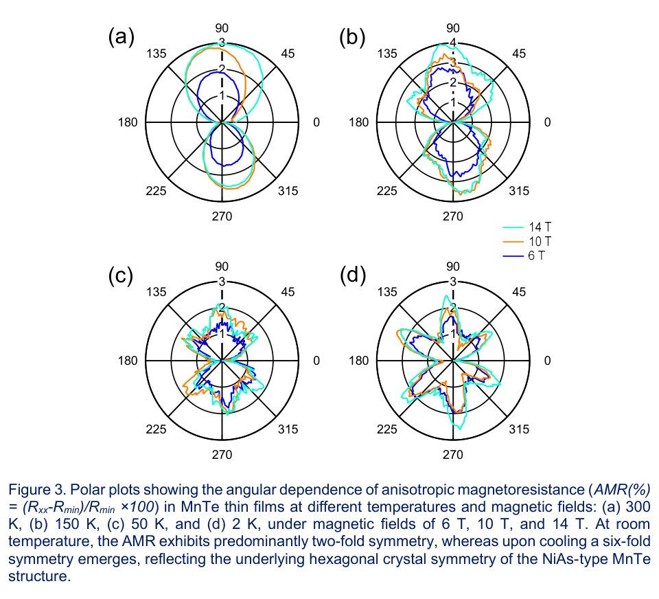
Summary. This work reports growing epitaxial $\alpha$-MnTe thin films and measuring their transport properties, which exhibit signatures of net magnetic polarization. By combining these experiments with DFT calculations, the authors propose that interface effects or point defects are responsible for inducing magnetism in a material expected to be an antiferromagnet. This demonstrates an engineering route toward functional spintronic materials.
Why it may be interesting. While focused on condensed matter magnetism rather than quantum information protocols, the study of emergent magnetic order (altermagnetism) driven by interfaces and defects provides models for engineered quantum materials relevant to spintronics devices.
Main problem. The central goal is to understand how to precisely control magnetic properties for next-generation spin-based electronics by investigating the emergence of finite net magnetic polarization in $\alpha$-MnTe thin films, which bulk theory predicts should be an antiferromagnet.
Main result. Magnetotransport measurements reveal hysteretic magnetoresistance signatures suggesting a net magnetic polarization, which DFT calculations attribute to interface effects or point defects breaking the material's intrinsic symmetry.
Method. The study combines experimental synthesis (MBE) and transport measurements (magneto-transport, AMR) with theoretical modeling using Density Functional Theory (DFT+U).
Model / system. The physical system is epitaxial $\alpha$-MnTe thin films grown on InP(111) substrates. The theory models the electronic structure and magnetic ordering by considering interface termination and specific point defects like Mn interstitials.
Key observables. Hysteretic butterfly longitudinal magnetoresistance, nonlinear transverse magneto-resistance, Anisotropic Magnetoresistance (AMR), and spin-polarized Density of States (DOS).
Important parameters / regimes. Low temperatures ($T$), applied magnetic fields ($H$), and the specific defect concentrations/interface terminations.
Assumptions / limitations. The observed metallic behavior might be due to defects rather than a fundamental change in electronic character; the emergence of magnetization is linked to symmetry breaking at interfaces or via point defects.
Figures summary. Figures show temperature dependence of resistance (metallic-like below 250 K), AMR vs. T and B, and DFT calculations illustrating spin asymmetry induced by specific defect configurations.
Paper structure. The paper first establishes the need for magnetic control in spintronics; it presents MBE growth and transport measurements showing anomalous hysteretic behavior; subsequently, DFT is used to calculate how interface effects or defects can stabilize a net magnetization against bulk antiferromagnetic predictions.
The ability to precisely control magnetic properties is central to the development of future spin-based electronics. In this work, we report the successful growth of epitaxial α-MnTe thin films on InP(111) substrates using molecular beam epitaxy. Magneto-transport measurements at low temperatures reveal a distinct, hysteretic butterfly longitudinal magnetoresistance alongside a nonlinear transverse magneto-resistance response, suggesting the presence of a finite net magnetic polarization in the films. To understand the origin of this behavior, density functional theory (DFT) calculations were performed. While pristine bulk MnTe is a compensated antiferromagnet, our computational results suggest multiple pathways through which a finite magnetization can emerge in thin-film geometries, including interface-induced symmetry breaking and point defects. These findings demonstrate an epitaxial route for engineering magnetic responses in thin films.
Authors: Igor Lyalin, C. C. Chiang, C. L. Chien
Type: experiment · Category: other · PDF: https://arxiv.org/pdf/2607.27813v1
Analysis basis: full PDF text, analyzed in chunks
Topic relevance: methods for driven-dissipative 1/5 · non-equilibrium dynamics 1/5 · spintronics-quantum-optics interface 1/5
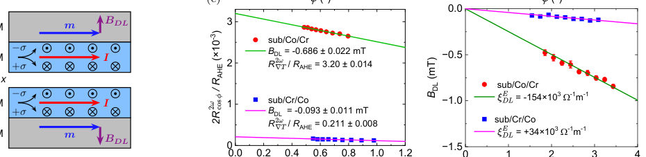
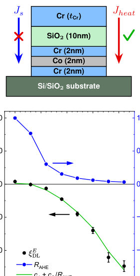
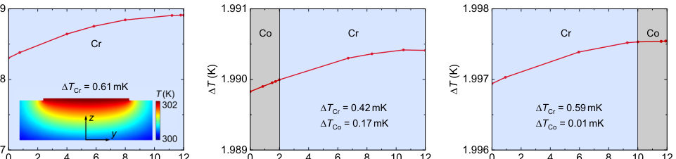
Summary. This work investigates how the ordinary Nernst effect contaminates measurements designed to quantify spin-orbit torque using Harmonic Hall techniques on metallic bilayers. The authors demonstrate that neglecting this thermal contribution leads to significantly exaggerated SOT values, necessitating careful re-analysis of existing literature.
Why it may be interesting. While focused on condensed matter transport, the rigorous separation of multiple competing physical mechanisms (SOT vs. Nernst/Thermal) mirrors challenges in isolating fundamental quantum responses in complex mesoscopic systems.
Main problem. The ordinary Nernst effect (ONE) contribution to second harmonic voltages in Harmonic Hall measurements is significant and often neglected, leading to overestimation of spin-orbit torque (SOT) efficiency.
Main result. The ONE cannot be ignored when quantifying SOT in metallic bilayers; correcting for it significantly reduces the calculated SOT efficiency values, suggesting previous results may need re-examination.
Method. Harmonic Hall measurements are performed on FM/NM bilayers using sinusoidal currents, and the measured signal is analyzed by fitting models that explicitly include the ONE contribution alongside standard SOT terms.
Model / system. The study focuses on metallic structures like Cr/Co bilayers ($ ext{sub}/ ext{Co}/ ext{Cr}$ and $ ext{sub}/ ext{Cr}/ ext{Co}$). The analysis involves separating contributions from Damping-like SOT, Field-like SOT, thermal effects (related to temperature gradients $ abla T$), and the ONE.
Key observables. Second harmonic Hall resistance ($R_{2\omega}^{xy}$), Damping-like SOT efficiency ($\xi^E_{ ext{DL}}$), and the Ordinary Nernst coefficient ($N$).
Important parameters / regimes. Stacking order of FM/NM layers, magnetic field dependence, and temperature gradient magnitude.
Assumptions / limitations. The analysis relies on modeling thermal artifacts using simulations (e.g., COMSOL) and assuming that the ONE contribution can be isolated or estimated from reference samples.
Figures summary. Figures illustrate the schematic of HH measurement geometry and show the angular dependence of $R_{2\omega}^{xy}$ for different bilayer stacks, highlighting large thermal backgrounds.
Paper structure. The paper systematically analyzes the measured second harmonic voltage by comparing results from standard SOT models against advanced models that incorporate the ONE and thermal effects, leading to corrected quantitative estimates for $\xi^E_{ ext{DL}}$.
The harmonic Hall measurements are commonly used to quantify the spin-orbit torque in ferromagnet/normal metal bilayers. The contribution from ordinary Nernst effect to the second harmonic voltages is usually assumed to be negligible and omitted in the data analysis. We show that in Cr/Co bilayers the ordinary Nernst effect cannot be neglected and can lead to largely exaggerated values of spin-orbit torque efficiency. Conducting additional experiments, we estimate the Nernst coefficient of Cr and find it comparable to the values reported for other metals. Consequently, the ordinary Nernst effect should be carefully considered when employing the harmonic Hall technique to quantify spin-orbit torque in metals, while the results of some previous works might need to be re-examined.
Authors: Curtis McDowell, Alina Mreńca-Kolasińska, Kenji Watanabe, Takashi Taniguchi, Ming-Hao Liu, Thiti Taychatanapat
Type: experiment · Category: other · PDF: https://arxiv.org/pdf/2607.27948v1
Analysis basis: full PDF text, analyzed in chunks
Topic relevance: interference shaping light 1/5 · non-equilibrium dynamics 1/5
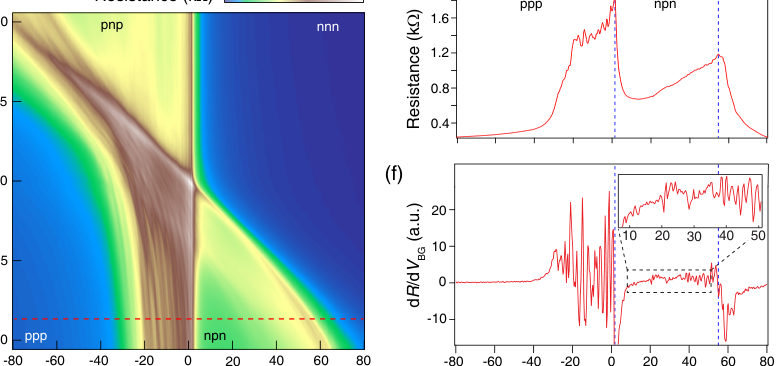
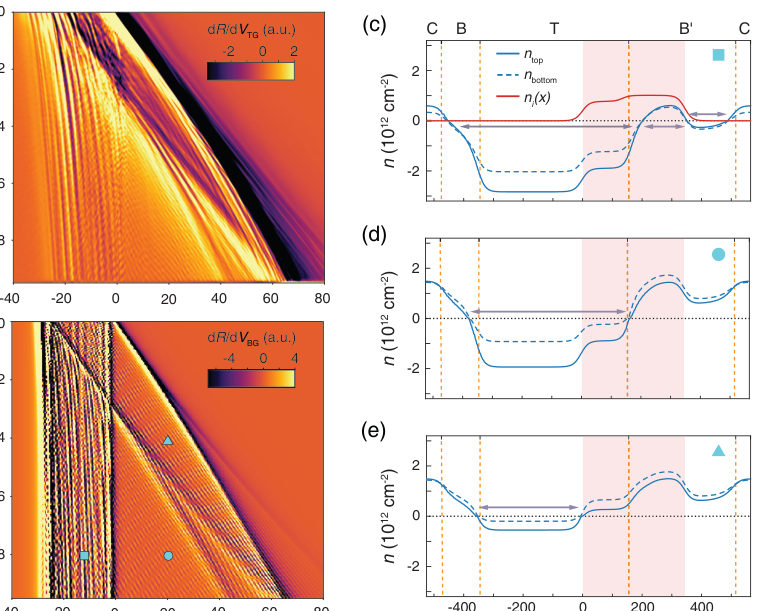
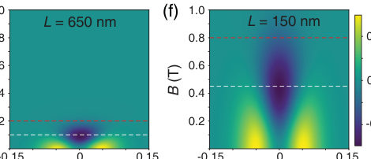
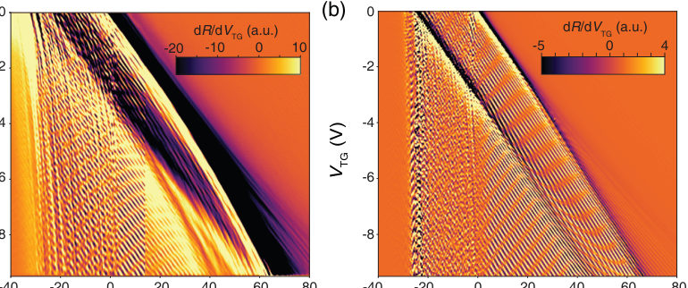
Summary. This work uses Fabry-Pérot interference measurements on twisted bilayer graphene to map out hidden potential barriers caused by unintentional local doping. By analyzing the characteristic resistance oscillations and their magnetic field dependence, the authors successfully model the precise spatial distribution of these charge inhomogeneities. This establishes interference spectroscopy as a powerful, non-destructive tool for characterizing internal defects in nanoscale quantum devices.
Why it may be interesting. The technique of using quantum interference spectroscopy to map static, unintentional charge inhomogeneities in 2D materials is highly valuable for understanding device physics beyond simple band structure calculations.
Main problem. The study aims to probe the internal potential profile of large-angle twisted bilayer graphene (tBLG) by identifying unintentional local doping that forms multiple electronic cavities.
Main result. The anomalous resistance oscillations are successfully attributed to localized, unintended doping creating distinct Fabry-Pérot cavities within the device structure. This method proves interference spectroscopy is a simple, non-invasive probe for mapping internal potential barriers.
Method. Fabry-Pérot (FP) interference measurements using 2-probe resistance mapping ($R$ vs $V_{BG}, V_{TG}$) at zero magnetic field, supplemented by magnetotransport analysis and quantum transport simulations.
Model / system. The physical system is large-angle tBLG encapsulated in hBN. The model incorporates a local doping profile $n_i(x)$ derived from electrostatic analysis to simulate the resulting potential barriers and cavity structures.
Key observables. Anomalous resistance oscillations, secondary vertical/diagonal resistance peaks, and the magnetic field dependence of interference fringe spacing.
Important parameters / regimes. Low temperature ($T=2.4 ext{ K}$), ballistic transport regime ($ ext{MFP} \sim 2 \mu ext{m}$), and doping-induced cavity lengths (e.g., $L \approx 150$ nm, $L \approx 650$ nm).
Assumptions / limitations. The observed oscillations are due to localized, unintentional doping forming potential barriers; the extracted profile is treated as a highly constrained model.
Figures summary. Figures show resistance maps ($R$ vs gates) revealing interference fringes (vertical/diagonal), and simulations map the derived potential profile $n_i(x)$ corresponding to these observed cavity structures.
Paper structure. The paper systematically uses transport measurements across different gate configurations (unipolar, bipolar) to observe characteristic Fabry-Pérot interference patterns. These patterns are then modeled by extracting a spatially varying doping profile $n_i(x)$, which is validated against both zero-field and magnetic field magnetotransport data.
We use Fabry-Pérot interference to probe the internal potential profile of large-angle twisted bilayer graphene. We trace anomalous resistance oscillations in the nominally unipolar regime to a hidden cavity formed by unintentional local doping in our device. By analyzing zero-field interference patterns, we determine the location and size of this inhomogeneity. Magnetotransport measurements support the model, distinguishing local cavity modes from global resonances through their different magnetic dependence. Simulations using our extracted profile reproduce the experimental features. Our results highlight interference spectroscopy as a simple, non-invasive probe for identifying local defects and internal potential barriers in ballistic devices.
Authors: Tatiana V. Pavlova, Vladimir M. Shevlyuga
Type: both · Category: other · PDF: https://arxiv.org/pdf/2607.27939v1
Analysis basis: full PDF text, analyzed in chunks
Topic relevance: methods for driven-dissipative 1/5 · non-equilibrium dynamics 1/5
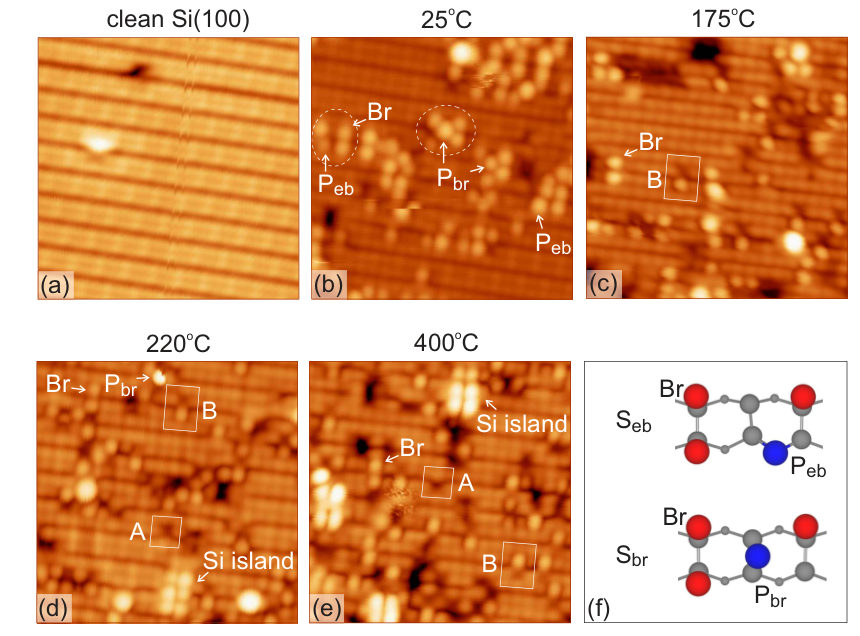
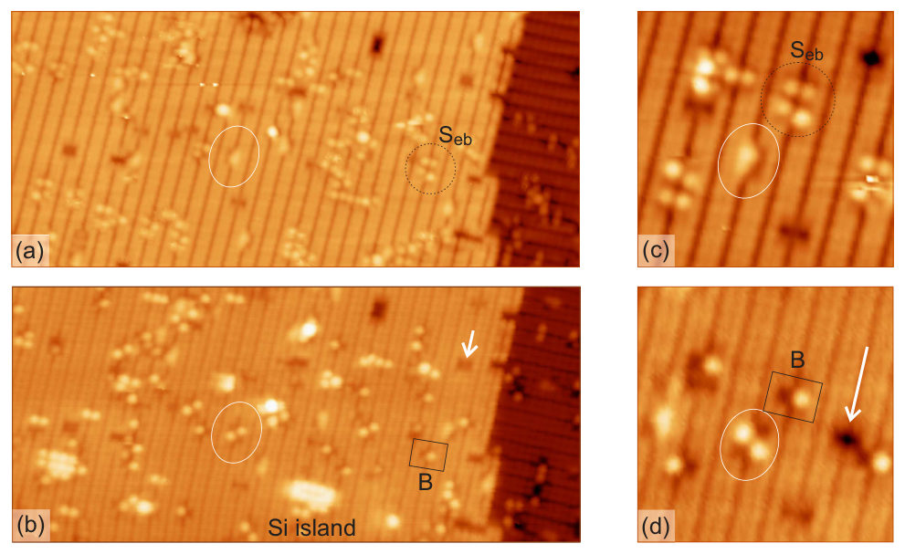
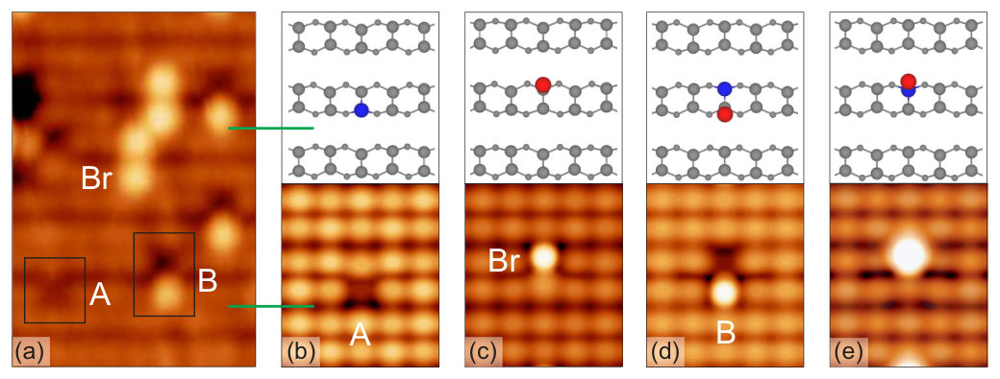
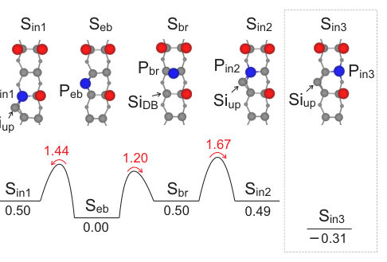
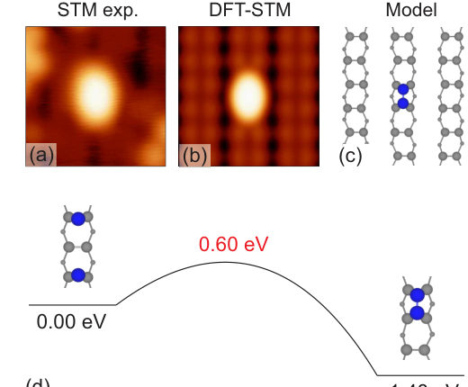
Summary. This work provides an atomic-scale investigation into how phosphorus dopants incorporate into silicon surfaces using PBr3 precursors. By combining STM imaging with DFT calculations, the researchers mapped the incorporation pathway, demonstrating that the process forms a stable P-Si-Br heterodimer structure at low temperatures. This offers crucial foundational knowledge for achieving highly precise doping necessary for advanced semiconductor devices.
Why it may be interesting. While focused on materials science, the precise control over atomic incorporation pathways and the use of in situ characterization techniques are highly relevant to understanding quantum interfaces or defect engineering in solid-state quantum devices.
Main problem. The study aims to understand the fundamental, atomic-scale mechanism by which single phosphorus dopant atoms are incorporated into the Si(100) surface.
Main result. Phosphorus incorporation occurs via an exchange reaction forming a stable P-Si-Br heterodimer structure, with DFT calculations confirming a low activation barrier of 1.44 eV consistent with experimental observations starting at 175°C.
Method. The research combines in situ Scanning Tunneling Microscopy (STM) experiments to track atoms and Density Functional Theory (DFT) calculations using the Nudged Elastic Band method to map energy barriers.
Model / system. The physical system is the Si(100) surface, studied using PBr3 as a precursor. The investigation tracks single P atoms undergoing exchange reactions with Si atoms upon controlled heating within the STM chamber.
Key observables. STM images showing surface features like depressions (embedded P) and protrusions (adsorbed Br), and calculated energy barrier profiles for atomic movement.
Important parameters / regimes. Low temperature doping initiation at 175°C; activation barriers calculated via DFT (e.g., 1.44 eV for P incorporation).
Assumptions / limitations. The analysis relies on the assumption that tracking individual atoms in situ provides a direct pathway, and that specific surface features observed correlate uniquely with predicted chemical structures.
Figures summary. Figures show STM images comparing surfaces before and after annealing at various temperatures (175°C to 400°C), illustrating island formation and structural changes. DFT energy barrier diagrams map the minimum energy pathway for P-Si exchange, confirming stability of the P-Si-Br heterodimer.
Paper structure. The paper establishes the need for atomic precision doping; it details the combined STM/DFT approach; results show initial observations at low temperatures (175°C); DFT calculations confirm the stable product and calculate the minimum energy pathway, correlating theory with direct experimental observation of single-atom exchange.
The objective of miniaturizing doped areas in silicon, with the ultimate goal of achieving atomic-precision doping, requires a fundamental understanding of the dopant incorporation process at the atomic level. We present a combined scanning tunneling microscopy (STM) and density functional theory (DFT) investigation of single phosphorus atom incorporation into the Si(100) surface. Phosphorus was supplied via PBr3 molecules, which completely dissociate on Si(100) at room temperature. By performing in situ annealing within the STM, we directly tracked the same phosphorus atom before and after heating. Upon annealing, the P atom undergoes an exchange with a nearby Si atom, forming a stable P-Si-Br complex with a Br atom located atop the Si atom of the heterodimer. The activation barrier calculated using DFT is consistent with our observation of doping starting at temperatures as low as 175 C. These results provide detailed atomic-scale insight into the phosphorus incorporation pathway and offer a foundation for improving methods of precise, single-atom doping in silicon.
Authors: Victor M. S. da Conceição, Erika N. Lima, Roberto H. Miwa, Igor S. S. de Oliveira
Type: theory · Category: other · PDF: https://arxiv.org/pdf/2607.27554v1
Analysis basis: full PDF text, analyzed in chunks
Topic relevance: interference shaping light 1/5
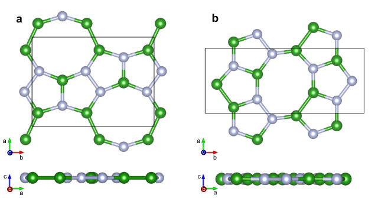
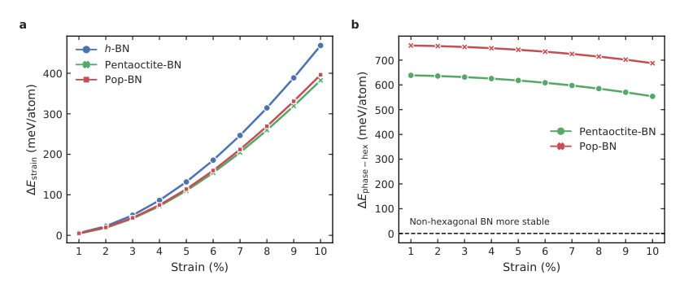
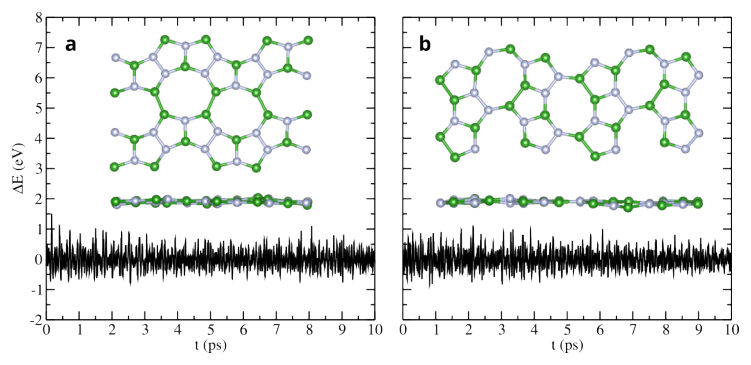
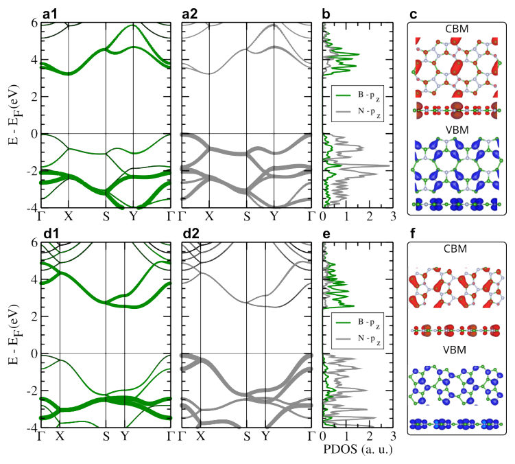
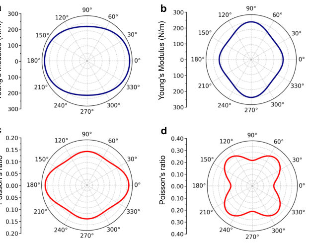
Summary. This theoretical study investigates two non-hexagonal boron nitride polymorphs, PO-BN and PP-BN, characterizing their stability and diverse physical properties. Using advanced first-principles methods, the authors demonstrate that these lattice modifications enable significant engineering of electronic and optical responses. This work highlights a promising pathway for developing next-generation optoelectronic materials by controlling BN's bandgap and absorption spectrum.
Why it may be interesting. The detailed analysis of polarization-dependent excitonic effects and the ability to tune absorption into the near-IR region using purely structural modifications is highly relevant for designing novel quantum emitters or photonic components in 2D materials.
Main problem. To systematically analyze the structural, electronic, mechanical, vibrational, thermal, and optical properties of two novel non-hexagonal boron nitride monolayers (PO-BN and PP-BN) compared to hexagonal BN.
Main result. Both PO-BN and PP-BN are predicted to be viable 2D materials with distinct lattice architectures that allow for the tuning of electronic and optical responses across visible, near-infrared, and potentially other spectral regions via lattice engineering.
Method. The study employs first-principles calculations using DFT (PBE/HSE06) for structural and electronic properties, alongside advanced methods like solving the Bethe–Salpeter equation (BSE) for optical response and AIMD for thermal stability.
Model / system. The physical systems are PO-BN and PP-BN monolayers, which possess pentagon-octagon ring networks, contrasting with the hexagonal structure of h-BN. The calculations analyze properties derived from these distinct non-hexagonal lattice arrangements.
Key observables. Electronic band gap (indirect), in-plane elastic anisotropy ($E( heta)$), phonon dispersion relations, excitonic absorption onset energy ($ ext{Im}(\epsilon_{xx}), ext{Im}(\epsilon_{yy})$).
Important parameters / regimes. Metastable relative to h-BN; lattice engineering effects; spectral tuning from UV toward visible/IR regions.
Assumptions / limitations. The polymorphs are assumed to be stable enough for practical application despite being metastable with respect to h-BN. The analysis often assumes planar structures when calculating elastic constants.
Figures summary. Figures illustrate optimized atomic structures, strain-dependent energetics comparing the phases, band structures showing orbital character at band edges, and optical spectra demonstrating polarization-dependent excitonic absorption shifts across different wavelengths.
Paper structure. The paper follows a systematic investigation: first establishing structural/electronic stability (DFT); then analyzing mechanical/vibrational robustness (elastic constants, phonons); finally characterizing advanced properties like optical response using BSE to demonstrate spectral tunability.
We investigate two novel non-hexagonal boron nitride monolayers, pentaoctite-BN (PO-BN) and pop-BN (PP-BN), using first-principles calculations. Their structural, electronic, mechanical, vibrational, thermal, and optical properties are systematically analyzed to assess their stability and potential applications. Despite being metastable with respect to hexagonal BN, both polymorphs satisfy the criteria for dynamical, mechanical, and thermal stability, indicating that they are viable two-dimensional materials. Both systems are indirect-gap semiconductors whose electronic states near the band edges are dominated by out-of-plane pz orbitals. Their distinct pentagon-octagon ring networks also give rise to different in-plane elastic anisotropies. Many-body optical calculations reveal strong excitonic effects and pronounced polarization-dependent optical absorption, with lattice engineering shifting the optical response from the ultraviolet toward the visible and infrared regions. These findings demonstrate that engineering non-hexagonal lattice architectures provides an effective strategy for tuning the electronic and optical properties of two-dimensional BN, highlighting PO-BN and PP-BN as promising candidates for future optoelectronic and photonic applications.
Authors: Federica Nasr, Emir Karadža, Santos F. Alvarado, Federico Binda, Tobias Goldenberger, Carlo Zucchetti, Myriam H. Aguirre, Paolo Moras, Andrey V. Matetskiy, Polina M. Sheverdyaeva, Paul Noël, Pietro Gambardella
Type: experiment · Category: other · PDF: https://arxiv.org/pdf/2607.28310v1
Analysis basis: full PDF text, analyzed in chunks
Topic relevance: spintronics-quantum-optics interface 1/5
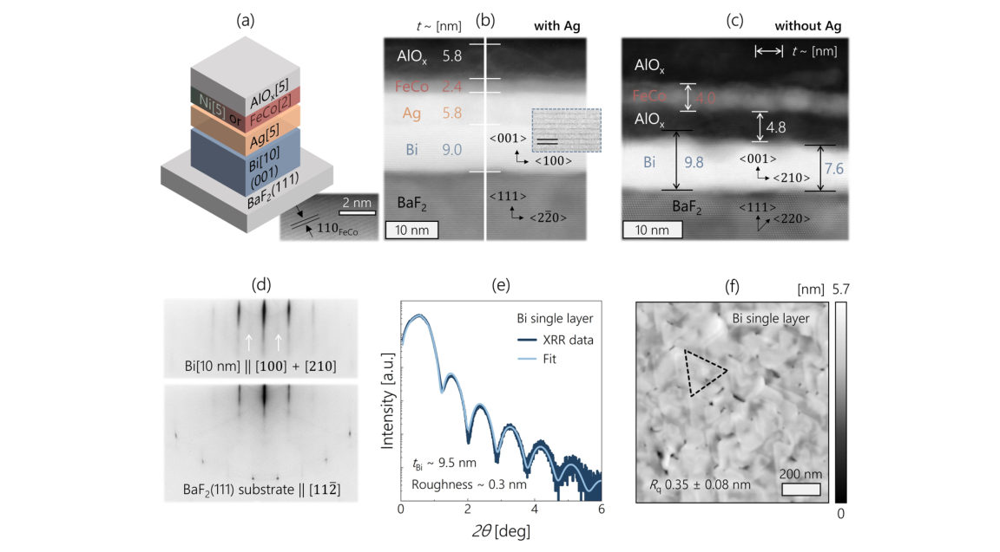
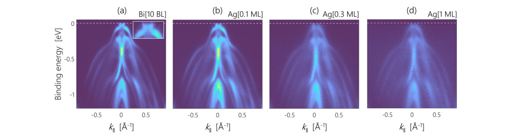
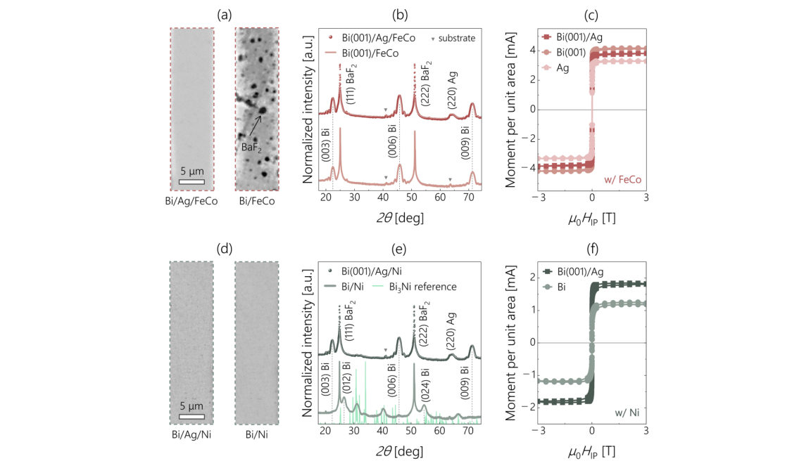
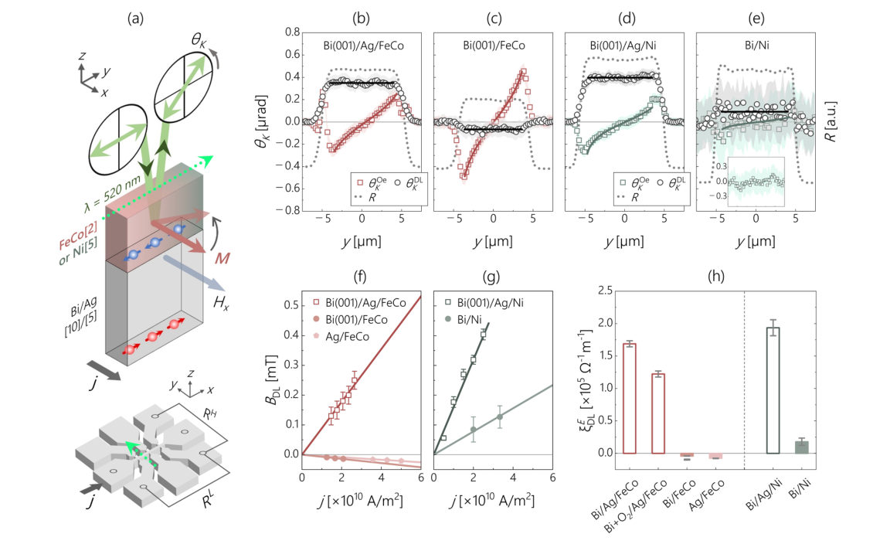
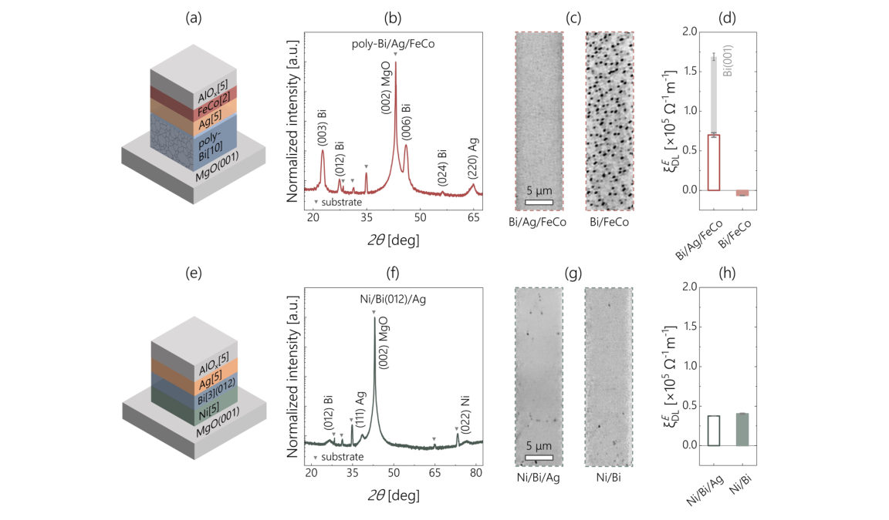
Summary. This work experimentally investigates charge-to-spin conversion efficiency in Bi/Ag magnetic heterostructures using SOT measurements. The authors demonstrate that the large spin signals are primarily due to maintaining the structural integrity of the bulk Bi layer, which is best achieved with an Ag spacer. This establishes design principles for reliable spintronic devices based on bismuth.
Why it may be interesting. While focused on condensed matter magnetism/spintronics, the rigorous correlation between atomic-scale structure (integrity) and macroscopic quantum transport coefficients ($ ext{SHC}$) provides a model for understanding how disorder or interface engineering affects fundamental quantum responses in solid-state systems.
Main problem. The study investigates charge-to-spin conversion efficiency, specifically Spin-Orbit Torques (SOTs), in bismuth (Bi)-based magnetic heterostructures and seeks to determine if the large observed signals originate from bulk properties or interfacial effects.
Main result. Inserting an Ag spacer significantly enhances SOT efficiency by over one order of magnitude, suggesting that structural integrity preservation is key. The enhancement is attributed to a dominant bulk contribution rather than interface-specific Rashba coupling.
Method. Measurements involve using magneto-optic Kerr effect magnetometry (MOKE) to measure damping-like SOTs, supplemented by structural analysis (XRD/STEM), ARPES, and harmonic Hall resistance measurements.
Model / system. The physical system consists of epitaxial and polycrystalline Bi layers interfaced with metallic ferromagnets (FeCo or Ni), often separated by an Ag spacer ($ ext{Bi}/ ext{Ag}/ ext{FM}$).
Key observables. Effective Spin Hall Conductivity ($ ext{SHC}$), Spin Hall Angle ($ ext{SHA}$), and the damping-like SOT magnitude measured via MOKE.
Important parameters / regimes. Structural disorder, presence/absence of Ag spacer, and the degree of structural/chemical integrity of the Bi layer are critical parameters.
Assumptions / limitations. The analysis assumes that the preservation of the bulk structural and chemical integrity of Bi is the primary determinant for high SOT efficiency, overriding potential interface-specific effects like Rashba coupling.
Figures summary. Figures summarize consolidated results showing structural, magnetic, electrical, and charge-to-spin conversion properties across various sample stacks (e.g., $ ext{Bi}(001)/ ext{Ag}/ ext{FeCo}$).
Paper structure. The paper systematically compares SOT measurements across different crystal orientations ($ ext{epitaxial}$ vs. $ ext{polycrystalline}$) and stack configurations, using structural characterization to correlate material quality with measured spin-charge conversion efficiency.
Bi is predicted to be an efficient generator of spin-orbit torques (SOTs), with charge-to-spin conversion efficiency comparable to those of prototypical heavy metals, such as Ta, W, and Pt. However, experimental reports provide widely scattered interconversion efficiencies, while the origin of the large conversion signal in Bi/Ag bilayers remains controversial. Here, we investigate charge-to-spin conversion in epitaxial and polycrystalline Bi-based magnetic heterostructures by measuring the damping-like SOT using magneto-optic Kerr effect magnetometry, complemented by structural and spectroscopic analyses and harmonic Hall resistance measurements. We show that inserting an Ag spacer between Bi(001) and metallic ferromagnets (FeCo or Ni) enhances the SOT efficiency by more than one order of magnitude, reaching an effective spin Hall conductivity of approximately $2 \times 10^5 (\hbar/2e)$ S/m, in excellent agreement with theoretical expectations for bulk Bi. This enhancement can be consistently explained by the preservation of the structural and chemical integrity of Bi, otherwise compromised by the direct deposition of a ferromagnetic overlayer, rather than by Rashba spin-orbit coupling at the Bi/Ag interface. Comparative studies across epitaxial, polycrystalline, and intentionally surface-oxidized Bi films, beyond oxygen doses known to destroy Bi(001) surface states, reveal that structural disorder has a negative impact on the SOT efficiency and indicate a dominant bulk contribution to spin-current generation in Bi/Ag heterostructures, yielding an effective Bi spin Hall angle of approximately 1. By establishing a direct correlation between atomic-scale integrity and charge-to-spin conversion, this study provides design principles to improve the reliability of Bi-based SOT devices and offers a robust framework for interpreting spin-charge interconversion in Bi and Bi/Ag systems.
Authors: R. Ramakrishnan, Samudra Roy, S. Stalin, M. Lakshmanan
Type: theory · Category: other · PDF: https://arxiv.org/pdf/2607.28197v1
Analysis basis: full PDF text, analyzed in chunks
Topic relevance: non-equilibrium dynamics 1/5
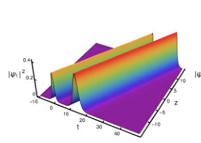
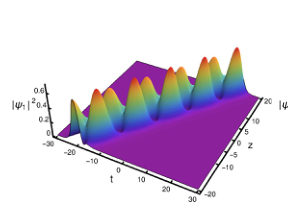
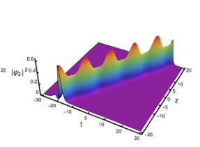
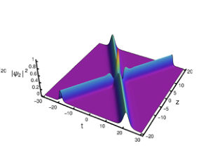
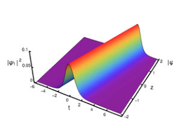
Summary. This paper analyzes nondegenerate bright solitons within the GCNLS system, demonstrating that these solutions exhibit characteristic breathing behavior. The authors characterize their collision dynamics—showing both elastic and energy-sharing interactions—and confirm their stability against random noise perturbations using advanced analytical and numerical methods.
Why it may be interesting. This work provides detailed insights into complex nonlinear wave phenomena in coupled systems, which is highly relevant for understanding light propagation in optical fibers or Bose-Einstein condensates (BECs) modeled by NLS equations.
Main problem. The study investigates the nature, dynamics, and interactions of nondegenerate bright solitons within the Generalized Coupled Nonlinear Schrödinger (GCNLS) system.
Main result. The derived non-degenerate vector solitons exhibit breathing behavior, undergo elastic collisions with standard phase shifts, and are shown to be stable against random perturbations.
Method. The research employs analytical techniques including linear transformations from known integrable models, asymptotic analysis for collision dynamics, and numerical stability testing using Gaussian white noise.
Model / system. The system is governed by the GCNLS equations, which incorporate self-phase modulation, cross-phase modulation, and four-wave mixing effects. It is treated as a completely integrable dynamical system.
Key observables. Breathing frequency, collision dynamics (elastic vs. energy-sharing), stability against noise, and soliton profile shape preservation/change.
Important parameters / regimes. Linear coupling parameters ($\alpha_j$), four-wave mixing parameter ($b$), relative velocity ($\Delta v$), and the level of added Gaussian white noise (3% and 5%).
Assumptions / limitations. The analysis relies on specific symmetry reductions and linear transformations connecting GCNLS to Manakov-type models; stability is tested against specified levels of random perturbations.
Figures summary. Figures illustrate double-hump nondegenerate vector solitons (Fig. 1), breathing behavior (Fig. 2), collision structures for different velocity regimes (Figs. 4, 7), and numerical confirmation of stability under noise addition (Fig. 10).
Paper structure. The paper first establishes the GCNLS model and derives non-degenerate solutions via reduction to a Manakov-type system. It then analyzes the breathing nature and collision dynamics using asymptotic methods, concluding with rigorous stability analysis against random perturbations.
It is known that the generalized coupled nonlinear Schroedinger (GCNLS) equations can be reduced to the basic vector nonlinear Schroedinger models through various symmetry reductions. By using such reductions, soliton solutions of several interesting types can be obtained for the GCNLS system. In this paper, we show how the non-degenerate soliton solutions can be derived using one such reduction and analyze the various special features associated with the resulting soliton solutions. We find that the obtained non-degenerate soliton solutions exhibit breathing behavior, characterized by a breathing frequency. We also show that the vector solitons emerging from the reduction undergo elastic collisions with the standard phase shift, similar to the non-degenerate solitons of other coupled nonlinear Schroedinger models. Further, they undergo interesting energysharing collisions when they interact with the already known bright solitons. These collision scenarios are further confirmed by an appropriate asymptotic analysis. We have also analyzed the stability of the obtained vector solitons and found that they are stable against random perturbations. The results presented here enhance the understanding of the nature and dynamics of non-degenerate vector solitons.
Authors: B. J. Ramshaw
Type: both · Category: other · PDF: https://arxiv.org/pdf/2607.28365v1
Analysis basis: full PDF text, analyzed in chunks
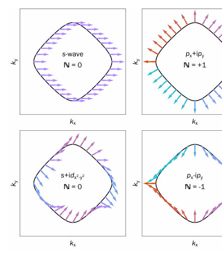
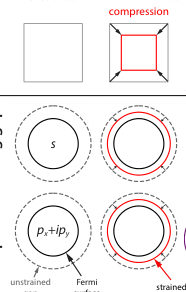
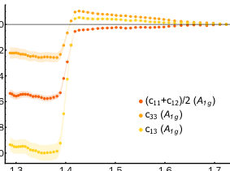
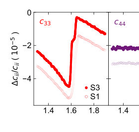
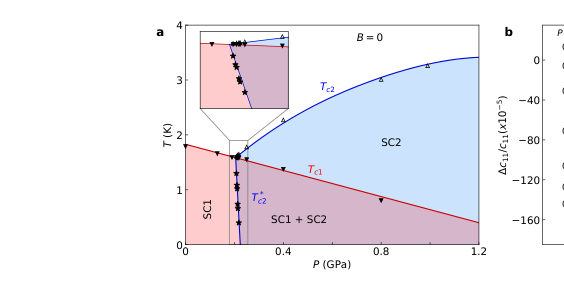
Summary. This review discusses methods to experimentally confirm chiral topological superconductivity by measuring how the superconducting state couples to mechanical strain. The authors emphasize that observing specific anomalies in shear elastic moduli would provide direct evidence for multi-component order parameters. Despite theoretical promise, current experimental results are largely negative, highlighting the need for refined, symmetry-based measurements.
Why it may be interesting. The rigorous connection drawn between lattice elasticity (a macroscopic measurement) and the microscopic symmetry/topology of superconducting order parameters provides a powerful, model-independent diagnostic tool for exotic quantum states.
Main problem. The central goal is confirming the existence of a bulk, topological superconductor, which remains unconfirmed despite decades of searching.
Main result. While theoretical frameworks exist for detecting chiral superconductivity via strain coupling, current experimental results from elastic modulus measurements remain negative or inconclusive across several candidate materials.
Method. The paper reviews using symmetry-resolved thermodynamic probes, specifically measuring jumps in shear elastic moduli (strain susceptibility), to provide unambiguous evidence for multi-component superconducting order parameters.
Model / system. The focus is on superconductors exhibiting multi-component or chiral order parameters ($\Psi$), which are theoretically linked to non-trivial topology quantified by the Skyrmion number. The analysis involves coupling these complex order parameters to lattice strain.
Key observables. Discontinuities (jumps) in shear elastic moduli at the superconducting transition temperature ($T_c$); spontaneous strains ($\epsilon_{xx} - \epsilon_{yy}$).
Important parameters / regimes. The multi-component nature of the order parameter, its chirality, and the coupling strength to strain fields.
Assumptions / limitations. It assumes that a measurable anomaly in shear elastic moduli directly signals the presence of a multi-component superconducting state required for chirality. It also notes that disorder complicates interpretation.
Figures summary. Figures illustrate Skyrmion numbers ($N$) calculated for various gap symmetries (e.g., $p_x \pm ip_y$), distinguishing topologically non-trivial states from trivial ones on the Fermi surface.
Paper structure. The paper provides a pedagogical introduction to multi-component order parameters and chiral superconductivity, details how these couple to strain via elastic moduli measurements, reviews case studies in heavy fermion and pnictide superconductors ($ ext{Sr}_2 ext{RuO}_4$, $ ext{UPt}_3$), and concludes by suggesting future experimental directions.
The confirmation of a bulk, topological superconductor is a central goal of modern quantum materials research. Despite decades of searching, no confirmed examples yet exist. A primary difficulty is that most experimental signatures of topological superconductivity are ambiguous and indirect. I review efforts to narrow the search for a chiral topological superconductor using measurements of elastic moduli. In principle, these experiments can provide unambiguous thermodynamic evidence for multi-component superconductivity---a pre-requisite for chiral superconductivity in 2D and quasi-2D materials. Despite the potential strength of this program, the results are still negative. I provide a pedagogical introduction to multi-component order parameters, chiral topological superconductivity, and how superconducting order parameters couple to strain. I discuss ongoing efforts in heavy fermion, iron pnictide, and Kagome superconductors, and suggest routes for speeding up the search process, as well as other experimental tools that should be developed for the pursuit of this goal.